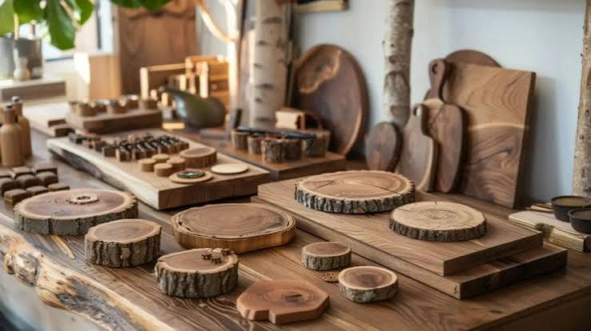
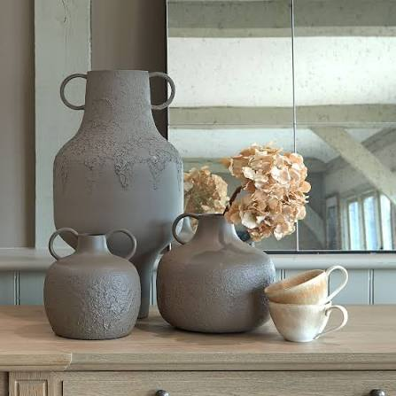
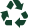
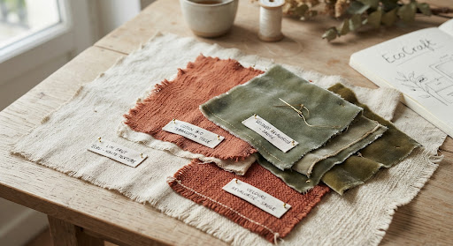
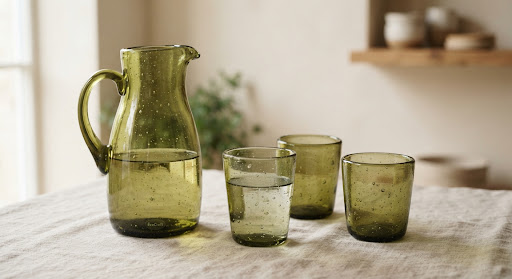
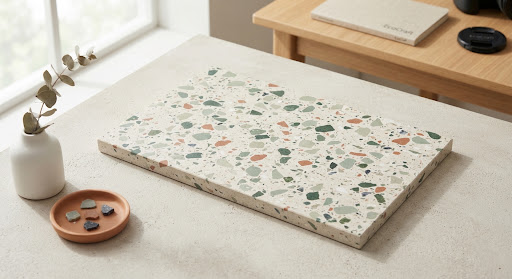
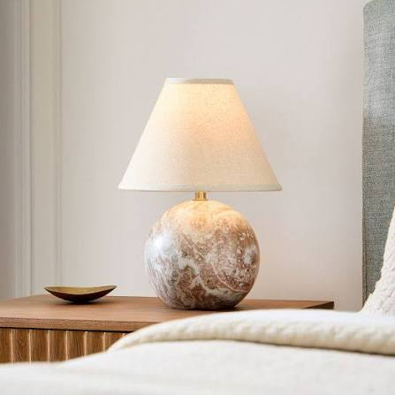
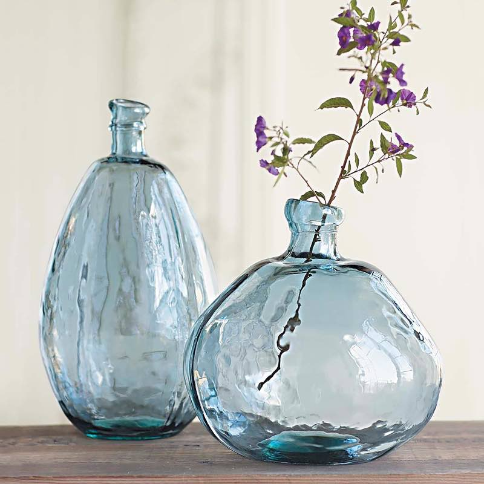

Filière 01
Gisement : 4,8 T
Bois de Réemploi
Chênes séculaires issus de déconstructions de granges normandes, chutes massives d'ateliers et palettes traitées sans chimie.

EcoArt relie le design contemporain à l'économie régénérative. Nous transformons les rebuts nobles — chutes de chêne séculaire, textiles dormants et verre soufflé — en objets d'exception conçus par 42 maîtres artisans.

14,2 t%

Matériaux revalorisés
Détournés des filières de destruction et d'enfouissement
42
Artisans partenaires
Ébénistes, verriers, céramistes et maroquiniers labellisés
100%
Pièces uniques ou ultra-courtes séries
Chaque texture témoigne de l'histoire vivante de la matière
Gisement : 4,8 T
Chênes séculaires issus de déconstructions de granges normandes, chutes massives d'ateliers et palettes traitées sans chimie.

Gisement : 3,1 T
Fins de rouleaux haute couture, toiles de chanvre vintage et lins lavés non utilisés collectés auprès de filatures des Hauts-de-France.

Gisement : 3,9 T
Bouteilles de domaines viticoles et chutes de miroiterie fondues au four solaire pour créer des textures organiques bulleuses.

Gisement : 2,4 T
Bouchons PEHD et bouteilles collectés en circuits scolaires puis thermocompressés pour façonner des plateaux ultra-résistants et marbrés.

Socle façonné dans une poutre de grange bretonne de 1890 et câble textile.
145 €




Une Éthique Sans Concession
Nous redéfinissons le luxe contemporain : la valeur d'un objet ne réside pas dans l'extraction de nouvelles ressources mais dans la dignité de sa transformation.
CE QUE COMPREND LA SESSION :
Matières premières upcyclées et outillage individuel fourni
Transmission des règles du thermomoulage à basse consommation
Pause thé bio & échange sur l'économie circulaire locale
« J'ai commandé la table basse en chêne de charpente. Le QR code m'a appris qu'elle venait d'une halle marchande du XIXe siècle à 30 km de chez moi. C'est du véritable luxe porteur de sens. »
« L'atelier de soufflage de verre recyclé était magique. On comprend la valeur du geste et on ne regarde plus jamais une bouteille de la même manière. Expérience humaine inoubliable ! »
« En tant qu'artisan maroquinier, EcoArt m'a permis d'écouler toutes mes chutes de sellerie noble auprès d'un public qui apprécie l'authenticité plutôt que la production de masse. »
Prêt à transformer votre intérieur avec des pièces chargées d'histoire ?
Explorez des créations numérotées ou privatisez un atelier pour vos équipes. Rejoignez notre communauté de plus de 3 500 passionnés de design durable.